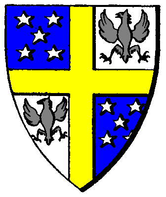

| Übersicht,
Allgemeines |
|
OOG: Alte Runde, Neue Runde
|
| Bogan Feuerherz (RIP) |
Dieb Elbdom von Tacheless, vor der verklasvung als McLeod bekannt
mal mit diesem Satz anfangen, das is eine neue Runde und irgendwelche Vorurteile etc. (auch wenn sie zutreffen mögen) aus der alten find ich ehrlich gesagt bissl ******
das sich alte nationen neu gründen (evtl. unter neuen namen) dagegen kann man nichts machen, weil wer sich einmal gut versteht mit jemanden der tut es wieder. aber ich bitte lasst wenigstens irgendwelche Kriege, etc. aus der alten Runde raus.
RPG gesehen sind wir 400 Jahre nach dem Überrennen der Dämonen, ich glaube kaum das sich da ausser Elfen und en paar Zwerge noch an die Zeiten erinnert ausser aus Geschichten, und Geschichten reichen nun rein gar nicht aus um wieder da weiterzumachen wo man aufgehört hat!
Seht die Runde als Neuanfang und knüpft nicht am alten an ... dies ist nru eine Bitte, und ich bitte euch haltet Euch daran.
mfg ein sehr genervert RPG-Spieler ^^
PS: Ich hab das mit Absicht in den AnschlägeThread gelegt da hier die grösste "Trefferquote" liegt, sollte es nicht passen solls ein Admin in den Allgemeinen schieben ... aber ich bin der Meinung das der auch als OOG Thread genau RPG trifft!
Bogan Feuerherz
Zur 3. Stunde am 66.Erntemond im Jahre 414 |
23.01.04 10:37

|
|
| Tankul v. Skavenblight (RIP) |
Also ich bin voll und ganz eurer meinung !
Am besten alles alte vergessen und einfach so tun als wär nichts gewesen !
Tankul von Nepahyan
Zur 3. Stunde am 66.Erntemond im Jahre 414 |
23.01.04 10:41
|
|
| Jack Pott (RIP) |
Ganz vergessen kann man es nicht, da wir nun einmal zeitlich gesehen 400 Jahre nach der alten Welt liegen.
Jeder mit altem Namen muss also ein unsterblicher Elf sein und natürlich könnten diese auch alte Probleme aufleben lassen, doch jemanden so komisch zu denunzieren wie "vor der Versklavung unter xy bekannt" ist peinlich. Denn ist dieser xy ein Mensch, wäre es UNMÖGLICH!
Jack Pott
Zur 4. Stunde am 66.Erntemond im Jahre 414 |
23.01.04 10:47
|
|
| Sydol (RIP) |
nun da elbdom mir es so sagte, und wir letzte runde freudne waren weiß ich das er elf ist... wie gesgat er sagte mir das er elbdom mcleod is... ich habe da nix neues erzählt...
Sydol
Zur 4. Stunde am 66.Erntemond im Jahre 414 |
23.01.04 10:54
|
|
| Bibi Biberzahn (RIP) |
((Wenn zwei Feinde, jeder mit altem Namen, aufeinandertreffen, dann spricht nichts gegen eine neue Fehde ("selber Schuld"). Neuer Namen - neues Glück...auch wenn ich (als Spieler) einige alte Namen erkenne, und ich allein daran schon erkenne, dass dieser Char Dieb/Plünderer ist, so reagiert mein Char da ganz anders, da er eben kein 400 Jahre altes gedächtnis hat.))
Bibi Biberzahn
Zur 5. Stunde am 66.Erntemond im Jahre 414 |
23.01.04 11:06
|
|
| Mia von Tacheless (RIP) |
also leute... elbdom mc leod und elbdom von tacheless sind doch ganz offensichtlich zwei personen? oder wie erklaert ihr euch sonst den wechsel der familie? wir jedenfalls, die von tacheless, haben mit dieser vor 400 jahren ausgestorbenen keltenfamilie NIX zu tun!
Mia von Tacheless
Zur 5. Stunde am 66.Erntemond im Jahre 414 |
23.01.04 11:09
|
|
| Infinity (RIP) |
Ich finde es schrecklich traurig, das man über sowas überhaupt diskutieren muss .. Wir haben alle neu angefangen, ob nun unter neuem Namen oder nicht, sei dahingestellt ... nur weil man sich in der letzten Runde feindlich gegenübergestanden hat, so muss es jetzt nicht wieder genauso sein .. da auch die Umstände jetzt andere sind als noch vor ein paar Wochen ...
Neue Runde, neues Glück .. oder auch Pech .. :)
Ich wünsche auf alle Fälle allen, egal ob bekannt oder auch nicht einen guten Start auf den Scherben ...
Infinity
Zur 6. Stunde am 66.Erntemond im Jahre 414 |
23.01.04 11:16
|
|
| Nephrém van Garth (RIP) |
((Hehe ... muß da Infinity zustimmen ... für mich ist es ein Neues Spiel ... und da wird sich noch genug ergeben im laufe des Games ... also entspannt euch ... fangt eine neue Runde an ... und laßt alles mal auf euch zu kommen ;-) ))
Grüße
Nephrém van Garth
Zur 8. Stunde am 66.Erntemond im Jahre 414 |
23.01.04 11:42
|
|
| Irian von Tacheless (RIP) |
Da hat Infinity vollkommen recht.
Es besteht überhaupt kein Zusammenhang zwischen der letzten und dieser Runde.
Alte Feindschaften sollten beigeleget werden und wer weiß, vielleicht entwickelt sich bei dem ein oder anderen eine richtige Freundschaft draus.
Vielleicht ist es aber auch ungekehrt.
Die Runde hat neu begonnen. Vergesst, was in der alten war. Schaut nach vorne und nicht nach hinten.
Irian
Zur 8. Stunde am 66.Erntemond im Jahre 414 |
23.01.04 11:46
|
|
| Bogan Feuerherz (RIP) |
hab ich das nicht auch gesagt? ... ps den ab in den müll post hab ich gelöscht, er trägt in keiner weise zur diskusion bei
Bogan Feuerherz
Zur 12. Stunde am 66.Erntemond im Jahre 414 |
23.01.04 12:44
|
|
| Frances el Ferror (RIP) |
Ich sehe das so: wer mit alten Namen und Nation wieder spielt muss damit rechnen auch alte Feinde wieder zu haben. Also selber Schuld.
Sinnvoller ist es sicherlich sich lieber neue Feinde zu machen (was man eh nicht verhindern kann;) und auf die Alten zu verzichten.
Frances el Ferror
Zur 16. Stunde am 66.Erntemond im Jahre 414 |
23.01.04 13:36
|
|
| Nevacilion (RIP) |
((was soll dieser thread im rpg-teil?))
Nevacilion
Zur 16. Stunde am 66.Erntemond im Jahre 414 |
23.01.04 13:38
|
|
| Sydol (RIP) |
steht doch da:
im 1.Beitrag
PS: Ich hab das mit Absicht in den AnschlägeThread gelegt da hier die grösste "Trefferquote" liegt, sollte es nicht passen solls ein Admin in den Allgemeinen schieben ... aber ich bin der Meinung das der auch als OOG Thread genau RPG trifft!
Sydol
Zur 17. Stunde am 66.Erntemond im Jahre 414 |
23.01.04 13:53
|
|
Stone
 |
Nun - auch ich habe meinen Namen aus der "alten" Runde wieder übernommen - aus zwei Gründen
1. spiele ich seit jeher unter diesem Namen (und bin auch online nur unter diesem bekannt) - ob er zu diesem Set passt oder nicht darüber lässt sich streiten
2. kann ich sehr wohl auch mit altem Namen eine neue Runde spielen da es mir möglich ist Chars voneinander zu trennen (manch einer der "alten" Freunde hat das wohl schon gemerkt als er mich in Diplos angehauen hat als würde er mich kennen und eine verwunderte Nachfrage erhalten hat..... |
25.01.04 7:56
 |
|
| Mondschein (RIP) |
Naja, hie und da habe ich mich auch schon über sowas geärgert, aber da kann man effektiv nichts gegen machen. Einfach nicht den Spass verderben lassen und ignorieren. |
25.01.04 8:55
|
|
| mefilas (RIP) |
ich werde verspottet ohne mich in dieser runder lächerlich gemacht zu haben... :( |
26.01.04 16:29
|
|
| Sydol (RIP) |
looooooool das von letzter runde reicht ja nun noch die nächsten 100 runden ^^ und sagen wir es so... schau mal innen müll ich bin mefilas sags ich da nur ;D aber eines sagsch dir, du kanst jetzt net mehr wegen der avataren meckern ^^ nun passen sie alle *gg* |
26.01.04 16:35
|
|
| Feniá Aducirièl (RIP) |
hmmm, hättest dir vielleicht besser nen andren Namen zugelegt und dich so getarnt melfilas. *g* |
26.01.04 16:50
|
|
| Sydol (RIP) |
nee dann wäre ein "ich bin anderer name" beitrag ^^ |
26.01.04 20:31
|
|
| Basha Bahati (RIP) |
Das wir 400Jahre später leben als auf der alten Scherbe,kann nicht ganz als Begründung dafür herhalten,dass nun Nationen oder Spieler völlig anders sein sollen als vorher und ,dass das,was in alten zeiten war, überhaupt keine Gültigkeit mehr hat.
Wir sind allesamt Nachfahren der früheren Scherbenbewohner.Wenn man dann bedenkt ,dass auch RL Völker Ansprüche auf Gebiete aus "biblischen" Zeiten erheben,nachdem sie dort 2 Jahrtausende nicht siedelten oder Bürgerkriege losgebrochen werden,weil vor 370 Jahren bei der Schlacht von (irgendwo auf Ex-Jugoslawischem gebiet) Serben gewonnen haben, dann sollte man die, die sich hier neue Namen gegegeben haben als das akzeptieren,was sie sind: Gänzlich andere Personen
Andererseits aber auch die,mit den Namen (Nation oder Einzelchar) auch so händeln:Eben die direkten Nachkommen der vorigen Scherbenbürger,die sich das Gruppenbewusstsein aus der alten zeit erhalten haben. |
26.01.04 20:34
|
|
| Mirakulus von Fendrakyr (RIP) |
NICHT zu vergessen, das die Geschichte mi es ist 400Jahre später, grandioserweise erst gelesen werden konnte als man sich mit dem Neuen "alten " Charakter schon angemeldet hatte, und viele sich vorher schon über einen Charktergeschichte wie sie Überlebt haben gedanken gemacht hatten. Ich persöhnlich hatte nicht mit 400 Jahren gerechnet, da hätte ARonius die Hintergrundgeschichte schon lieber im ANmeldebildschirm erläutern sollen, das hätte bestimmt einige dazu bewegt ihre Geschichte und ihren Charakter zu ändern aber so ? ich hatte jedenfalls keine Lust noch mal neu anzufangen, auch nicht als ich so Plötzlich von der Startinsel runter gebeamt worden bin, da hatte ich eher die Idee den GANZEN KRAM hinzuschmeissen. Ich finde gerade diese Mischung aus Neuen und alten Charakteren interessant es gibt Geschichten zu erzählen aus alten Tagen alte Freund treffen sich nach langer irrfart wieder, Alte Feind schlagens ich wieder die Köpfe ein *g* oder gehen zusammen ein saufen um auf die Alten Zeiten zu trinken, ganz wie es gefällt, dies 400 Jahre waren IMHO einen BLÖDE IDEE jedenfalls so OHNE ANKÜNDIGUNG ! DA müssen Nichtelfen sich jetzt IG echt einen ABkaspern um ihr "Überleben" zu erklären. Wenn Aronius eine VOLLKOMMEN neue Welt OHNE "Überlebende" hätte Haben Wollen, hätte er es Bestimmt geschrieben. ich nehme mal an, das er sich was dabei gedacht hat, und ev. bekommen wir das ja irgendwan noch mit, aber ne Ankündigung vor der Neuanmeldung wäre echt nett gewesen. |
28.01.04 4:20
|
|
| Mondschein (RIP) |
Söhne die heissen wie die Väter und die Väter der Väter, das gab es schon immer. Auch über 400 Jahre hinweg hat soch so manch Familientradition gehalten, wenn es einen Helden im Familienstammbaum gibt. Das ist für mich so ziemlich einzige RPG Erklärung warum es die gleichen Namen wieder gibt.. naja gut.. und der Zufall ;-) |
28.01.04 7:23
|
|
| Infinity (RIP) |
Ob alt oder neu .. ist doch völlig egal .. Ihr solltet mal alle anfangen, das Spiel nicht als Fortsetzung sondern als was Neues zu sehen ... schliesslich ist die alte Scherbe untergegangen .. ^^
.. und da wir nun alle zu gleichen Bedingungen und unter ganz anderen Umständen als beim letzten mal wieder angefangen haben, sollten solche Dinge wie alte Feindschaften etc. auch gar kein Thema sein .. |
28.01.04 9:38
|
|
Übersicht,
Allgemeines
|